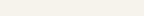

← catalogue
La Terrasse des quais

- genre : circuit
- jeu : opencade-derapage
- licence : MIT (verified)
- source : https://forgejo.pingfr.duckdns.org/david/Opencade.git@172156af3849e6061e3706166a991c77cf95528a:src/engines/derapage/circuits.ts @ 9092eae83279 — derapage/circuit-21.json
- dimensions : 9×1
- mécaniques : —
- versions publiées : —
- contenu :
5b8198be33f709d0